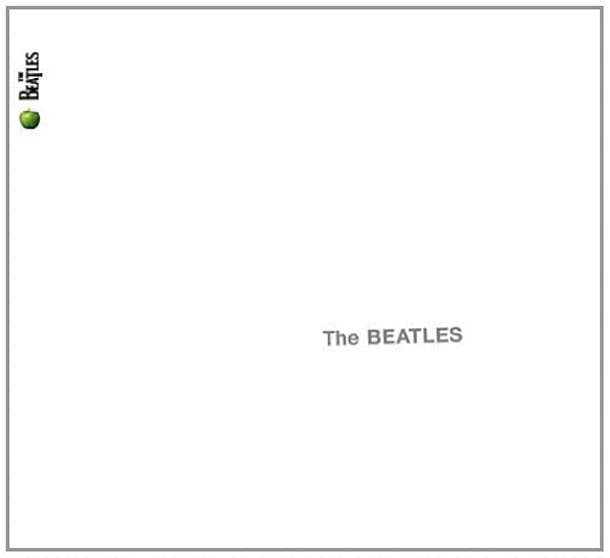

The Beatles ("The White Album") (1968)
Easily the Beatles' lengthiest and most diverse album, the self-titled album, widely known as the White Album, stands as a divisive landmark in the Beatles history. Facing pressure to release a project despite internal strife and a mutual feeling of fracture, the White Album shows the band pushing the envelope of popular music. With experimental tracks like Wild Honey Pie and Why Don't We Do It In The Road? mixed with soulful ballads like Blackbird, the White Album offers a range of sounds, some beloved and some dismissed. On the White Album, the fragmenting styles of each musician begin to show through: Paul McCartney's eclectic-yet-upbeat sound in Back In The U.S.S.R and I Will, George Harrison's desire for a bigger role in While My Guitar Gently Weeps, and John Lennon's icy Happiness Is A Warm Gun and relatable I'm So Tired. Not every song on the self-titled record will land for every listener but is has a lot to offer and sounds about three decades ahead of its time, especially in songs like Honey Pie and Revolution 9, and is an essential project of the Beatles.
Back In The U.S.S.R. - 2:43
Dear Prudence - 3:55
Glass Onion - 2:17
Ob-La-Di, Ob-La-Da - 3:08
Wild Honey Pie - 0:52
The Continuing Story Of Bungalow Bill - 3:14
While My Guitar Gently Weeps - 4:45
Happiness Is A Warm Gun - 2:44
Martha My Dear - 2:28
I'm So Tired - 2:03
Blackbird - 2:18
Piggies - 2:04
Rocky Raccoon - 3:33
Don't Pass Me By - 3:50
Why Don't We Do It In The Road? - 1:41
I Will - 1:45
Julia - 2:56
Birthday - 2:43
Yer Blues - 4:00
Mother Nature's Son - 2:48
Everybody's Got Something To Hide Except Me And My Monkey - 2:24
Sexy Sadie - 3:15
Helter Skelter - 4:29
Long, Long, Long - 3:06
Revolution 1 - 4:15
Honey Pie - 2:41
Savoy Truffle - 2:54
Cry Baby Cry - 3:02
Revolution 9 - 8:22
Good Night - 3:13